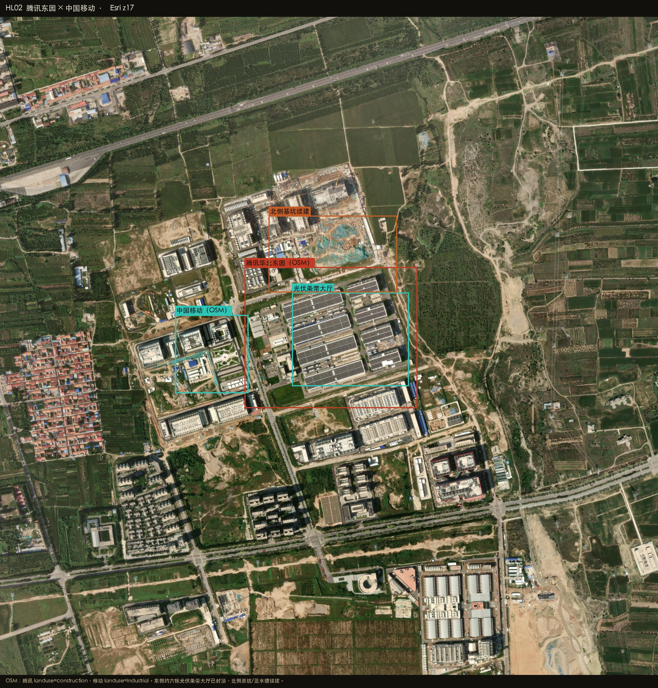
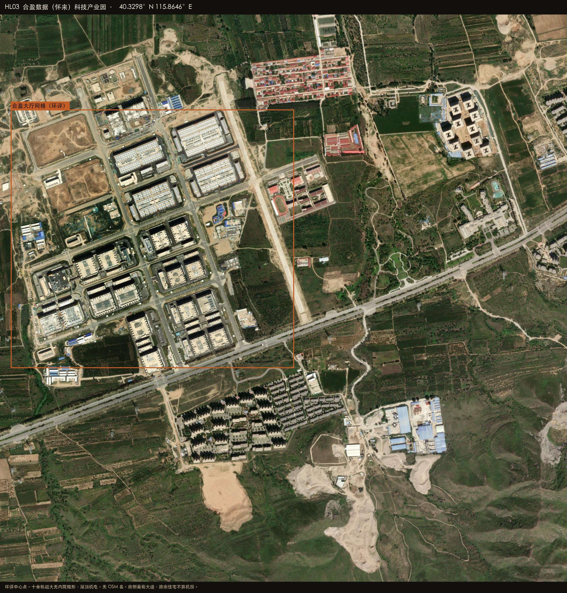
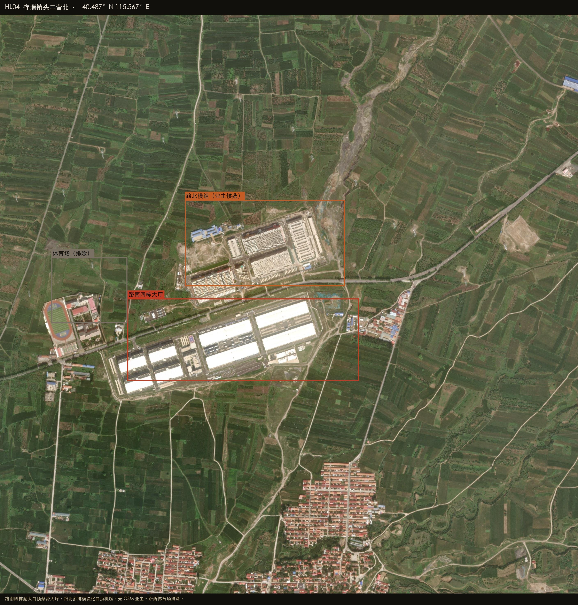

Datacenter Probe · 怀来40.3248°N 115.8193°E · r = 50 km
Esri World Imagery · 2026-08-27
Satellite reconnaissance · Hebei
怀来周边数据中心建设情况
怀来东花园在官厅水库北岸，和张北不是同一条走廊。圆心取 OSM 腾讯华北东园：多栋无内院大厅、屋顶光伏/冷机条带，北侧基坑还在挖。紧贴西侧是中国移动京津冀（张家口）数据中心。葡萄大道南是 OSM 秦淮东花园。再往东约 4 km 是合盈环评坐标，十余栋大厅网格。存瑞镇头二营北另有一组：路南四栋超大白顶、路北多排模组，业主保持候选。
HERO · 东花园葡萄大道 · 西腾讯/移动，南秦淮，东合盈
底图 Esri World Imagery（WGS84）
HL-TENCENT · 东园
OSM landuse=construction。约六栋光伏条带大厅已封顶，北侧基坑续建。
高 · 在建+投运
HL-CMCC · 西邻
OSM 工业用地，紧贴东园西侧，同规格大厅。
高置信 · 已投运
HL-QINHUAI · 南 1.1 km
OSM way/867231233。葡萄大道南独立大院，白顶大厅。
高置信 · 已投运
HL-HOYINN · 十余栋
环评中心点 40.3298,115.8646。大厅网格清楚，无 OSM 名。
中高 · 形态
40.3248°N 115.8193°E
腾讯华北东园
东花园葡萄大道北、京藏 G6 南。OSM way/867231234，40.3224–40.3273N 115.8154–115.8233E。
高置信 · 在建 + 已投运
多边形内多栋无内院大厅；东侧约六栋屋顶光伏条带（40.3232–40.3264N 115.8175–115.8229E）
北侧基坑、蓝水塘、柴发院续建
南约 1.1 km 是 OSM way/867231233 河北秦淮数据东花园基地（40.3129–40.3173N 115.8218–115.8271E）
报道称腾讯怀来东园/瑞北，东园已钉在此多边形
腾讯
在 Google 卫星图打开 ↗

PLATE HL02 · 腾讯 × 移动 · Esri z17
40.3243°N 115.8139°E
中国移动京津冀（张家口）
紧贴腾讯东园西侧。OSM way/1481173783 landuse=industrial，40.3229–40.3256N 115.8122–115.8155E。
高置信 · 已投运
同规格白顶/条带屋顶大厅
同属东花园葡萄大道组团，不是张北
中国移动
在 Google 卫星图打开 ↗
PLATE HL02 · 中国移动 · 东园西邻
40.3151°N 115.8244°E
河北秦淮数据东花园基地
葡萄大道南、腾讯东园南约 1.1 km。OSM way/867231233 landuse=industrial，40.3129–40.3173N 115.8218–115.8271E。
高置信 · 已投运
独立大院与白顶大厅，和东园不是同一块多边形
总图 HL01 框 3
不要和存瑞镇报道里的秦淮存瑞混成一个园
秦淮数据
在 Google 卫星图打开 ↗
PLATE HL01 · 秦淮东花园 · 框 3
40.3298°N 115.8646°E
合盈数据科技产业园
2022-01 环评第二次公示中心点 40°19′47.38″N 115°51′52.58″E。无 OSM 名。与腾讯组团隔大南辛堡村约 4 km。
中高置信 · 大厅网格 / 业主按环评
十余栋超大无内院矩形网格、屋顶机电（约 40.328–40.338N 115.851–115.867E）
西/北侧垫层续建
南侧葡萄大道，路南住宅不算机房
合盈数据
在 Google 卫星图打开 ↗

PLATE HL03 · 合盈 · 环评坐标
40.4870°N 115.5670°E
存瑞镇头二营北
头二营村（OSM node/6541383304 40.4758,115.5596）北侧田间独立大院。图上无牌匾。
中高 · 是机房 / 候选 · 业主
路南四栋超大白顶条带大厅（40.4847–40.4879N 115.5581–115.5702E）
路北多排模块化白顶机房+屋顶机电
报道腾讯瑞北在头二营/葫芦套、秦淮存瑞在 G239，业主保持候选
路西体育场排除
业主待核
在 Google 卫星图打开 ↗

PLATE HL04 · 头二营北 · 业主待核
怎么判，什么不算
圆心在东花园园区，不在怀来县城。50 km 圈东缘会扫进北京昌平的银行数据中心，那些不算怀来。
算作机房
超大无内院矩形、屋顶光伏/冷机条带 OSM 具名（腾讯东园、中国移动、秦淮东花园） 环评坐标对得上的大厅网格（合盈） 明确排除
北京昌平中行/建行/农行/人行/国开行/中石油数据中心 大南辛堡村住宅、葡萄园 头二营路西体育场 阿里（在张北，不写入怀来） 在 Google 卫星图打开圆心 ↗
五座城
贵安 · 乌兰察布 · 阳泉 · 中卫 · 克拉玛依
续卷
张北 · 怀来 · 庆阳 · 和林格尔 · 韶关 · 芜湖
Datacenter Probe · 怀来 · 标注截图仅供复核，不是权属证明。
影像 © Esri, Maxar, Earthstar Geographics。续卷 · 东数西算枢纽，不是 2022 智东西原文里的五座城。
关闭